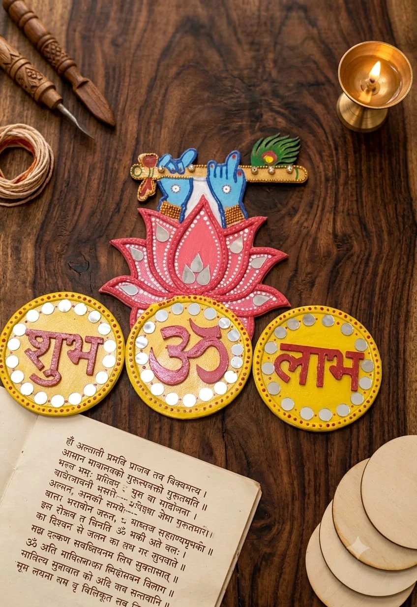

Krishna Bansuri & Shubh Om Labh Plaque
Spiritual & Festive · Available

₹2,599
₹2,899
Shipping excluded; calculated for your location.
Celebrates Indian devotion with exquisite handcrafted clay details including Krishna's hands holding the golden bansuri, an ornate mor pankh (peacock feather), and auspicious Shubh, Om, and Labh medallions.
- Dimensions
- 14 × 11 inches
- Materials
- MDF Base, Relief Clay, Peacock Feather Motif, Shubh Om Labh Discs
- Customization
- Available; contact Ashima for details
Advance payment required. Please discuss shipping, payment and the studio’s return policy before ordering.